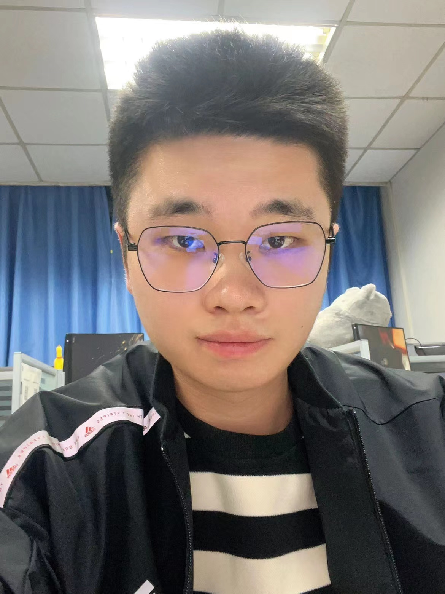

刘洋
本人于2020年5月加入大连理工大学（Dalian University of Technology，DUT）信息与通信工程学院，现任副教授。此前，本人曾于华为技术有限公司（上海）担任研究工程师，研究5G通信系统相关技术，曾在Marvell Semiconductor Ltd.(美国硅谷)担任数字信号处理工程师，研发超高速以太网通信技术。本人于美国Lehigh University获得电气工程学（Electrical Engineering，即EE）博士学位。于北京邮电大学获得本科(with Honor)与硕士学位。
邮箱：yangliu_613@dlut.edu.cn | 办公室：海山楼 B0411 | 学校教师主页
科研方向
教学
论文发表
Journal Papers:
- Yang Liu, Y. Ma, M. Li, Q. Wu and Q. Shi, "Spectral Efficiency Maximization for Double-Faced Active Reconfigurable Intelligent Surface," IEEE Trans. Signal Process., Early Access, 2023. [Paper]
- Yang Liu, Q. Shi, Q. Wu, J. Zhao and M. Li, "Joint Node Activation, Beamforming and Phase-Shifting Control In IoT Sensor Network Assisted by Reconfigurable Intelligent Surface," IEEE Trans. Wireless Commun., Early Access, 2022. [Paper]
- Yang Liu, J. Zhao, M. Li and Q. Wu, "Intelligent Reflecting Surface Aided MISO Uplink Communication Network: Feasibility and Power Minimization for Perfect and Imperfect CSI," IEEE Trans. Commun., vol. 69, no. 3, pp. 1975-1989, Mar. 2021. [Paper]
- Yang Liu, J. Li and H. Wang, "Robust Linear Beamforming in Wireless Sensor Networks," IEEE Trans. Commun., vol. 67, no. 6, pp. 4450-4463, June 2019. [Paper]
- Yang Liu, and J. Li, "Linear Precoding to Optimize Throughput, Power Consumption and Energy Efficiency in MIMO Wireless Sensor Networks," IEEE Trans. Commun., vol. 66, no. 5, pp. 2122-2136, May 2018. [Paper]
- Yang Liu, J. Li and X. Lu, "Joint Transceiver Design for Linear MMSE Data Fusion in Coherent MAC Wireless Sensor Networks," Elsevier Information Fusion, pp. 37-49, 2017.
- Yang Liu, J. Li, X. Lu, C. Yuen and J. Wu, "A Family of Chaotic Pure Analog Coding Schemes Based on Baker’s Map Function", EURASIP J. Advances Signal Processing, vol. 58, July 2015.
- R. Liu, M. Li, Yang Liu, Q. Wu and Q. Liu, "Joint Transmit Waveform and Passive Beamforming Design for RIS-Aided DFRC Systems," IEEE J. Select. Signal Process., vol. 16, no. 5, Aug. 2022.
- H. Luo, R. Liu, M. Li, Yang Liu, and Q. Liu, "Joint Beamforming Design for RIS-Assisted Integrated Sensing and Communication Systems," IEEE Trans. Vech. Tech., 2022, Early Access.
- W. Cai, R. Liu, M. Li, Yang Liu, Q. Wu, and Q. Liu, "IRS-Assisted Multicell Multiband Systems: Practical Reflection Model and Joint Beamforming Design," IEEE Trans. Commun., vol. 70, no. 6, pp. 3897-3911, June 2022.
- Z. Xiao, R. Liu, M. Li, Yang Liu, and Q. Liu, "Low-Complexity Designs of Symbol-Level Precoding for MU-MISO Systems," IEEE Trans. Commun., vol. 70, no. 7, pp. 4807-4820, July 2022.
- Y. Zhou, Yang Liu, M. Li, Q. Wu, and H. Wang, "Joint Sensor Selection, Beamforming and Phase Control in Reconfigurable Intelligent Surface Aided IoT Fusion Networks," IEEE Wireless Commun. Lett., vol. 11, no. 2, pp. 401-405, Feb. 2022.
- H. Li, W. Cai, Yang Liu, M. Li, Q. Liu and Q. Wu, "Intelligent Reflecting Surface Enhanced Wideband MIMO-OFDM Communications---from Practical Model to Reflection Optimization," IEEE Trans. Commun., vol. 69, no. 7, pp. 4807-4820, July 2021.
- Q. Wu, F. Zhang, H. Wang, J. Lin, and Yang Liu "Parameter-free Lp-Box Decoding of LDPC Code”, IEEE Commun. Lett., vol. 22, no. 7, pp. 1318-1321, July 2018.
- X. Lu, J. Li, and Yang Liu, "Cooperative Transmission Through Signal-Superposition-Based Braid Coding," IEEE Trans. Veh. Tech., vol. 65, no. 5, pp. 3100-3114, May 2016.
- X. Lu, J. Li and Yang Liu, "New Soft-Encoding Relay (SoER) Mechanisms for Wireless Relay Systems: Convolutional and Turbo Constructions," IEEE Trans. Wireless Commun., vol. 15, no. 4, pp. 2443-2457, Apr. 2016.
- X. Lu, J. Li and Yang Liu, "Soft Parallel Wireless Relay via Z-Forward," IEEE Trans. Wireless Commun., vol. 14, no. 11, pp. 6339-6352, Nov. 2015.
Conference Papers:
此处就不一一列举了，太麻烦了 (￣ ￣|| )
组内成员

李爱陈
- Aichen Li, Y. Liu, M. Li, Q. Wu, and J. Zhao, "Joint Scheduling Design in Wireless Powered MEC IoT Networks Aided by Reconfigurable Intelligent Surface," IEEE Inter. Conf. Commun. China (ICCC) Workshop, Xiamen, China, July, 2021. [Paper]
- Aichen Li, Y. Liu, Q. Wu, Q. Shi, and J. Zhao, "Joint Scheduling and Beamforming Design in Traffic-Aware RIS Aided MEC NetworkConference Paper," IEEE Global Commun. Conf. (Globelcom) Workshop, Rio de Janeiro, Brazil, Dec. 2022. [Paper]
周煜嫣
- Yuyan Zhou, Y. Liu, M. Li, Q. Wu, and H. Wang, "Joint Sensor Selection, Beamforming and Phase Control in Reconfigurable Intelligent Surface Aided IoT Fusion Networks," IEEE Wireless Commun. Lett., vol. 11, no. 2, Feb. 2022. [Paper]
- Yuyan Zhou, Y. Liu, Q. Wu, Q. Shi, and J. Zhao, "Queueing Aware Power Minimization for Wireless Communication Aided by Double-Faced Active RIS," submitted to IEEE journal.
郭源
- Yuan Guo, Y. Liu, M. Li, Q. Wu, and Q. Shi, "Beamforming Design for Power Transferring and Secure Communication in RIS-Aided Network," IEEE Int. Conf. Commun. (ICC), Seoul, South Korea, June 2022. [Paper]
- Yuan Guo, Y. Liu, Q. Wu, Q. Shi, and Y. Zhao, "Enhanced Secure Communication via Novel Double-Faced Active RIS," submitted to IEEE journal.
- Yuan Guo, Y. Liu, Q. Wu, X. Zeng, and Q. Shi, "Joint Beamforming and Power Allocation for RIS Aided Full-Duplex Integrated Sensing and Uplink Communication System," submitted to IEEE journal.
朱彦泽
- Yanze Zhu, Y. Liu, M. Li, Q. Wu and Q. Shi, "Power Saving Design of Active Reconfigurable Intelligent Surface-A Sub-Array Architecture,” IEEE Global Commun. Conf. (Globelcom), Rio de Janeiro, Brazil, Dec. 2022. [Paper]
- Yanze Zhu, Y. Liu, J. Zhao, M. Li, and Q. Wu, "Joint Time Allocation and Beamforming Design for IRS-Aided Coexistent Cellular and Sensor Networks," IEEE Global Commun. Conf. (Globelcom), Madrid, Spain, Dec. 2021. [Paper]
- Yanze Zhu, Y. Liu, M. Li, Q. Wu, and Q. Shi, "A Flexible Design for Active Reconfigurable Intelligent Surface—A Sub-Array Architecture," submitted to IEEE journal, under 2-nd round revision.
- Yanze Zhu, Y. Liu, Q. Wu, C. You, and Q. Shi, "Channel Estimation By Transmitting Pilots From Reconfigurable Intelligent Surface," submitted to IEEE journal, under 1-st round revision.
